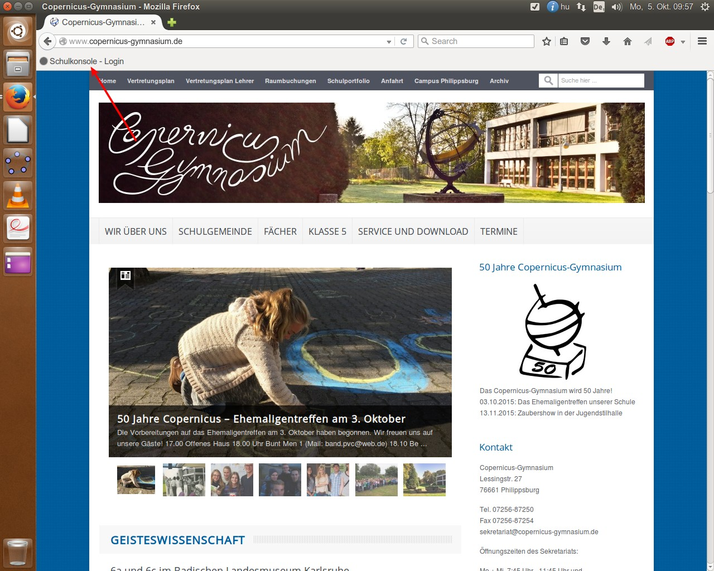
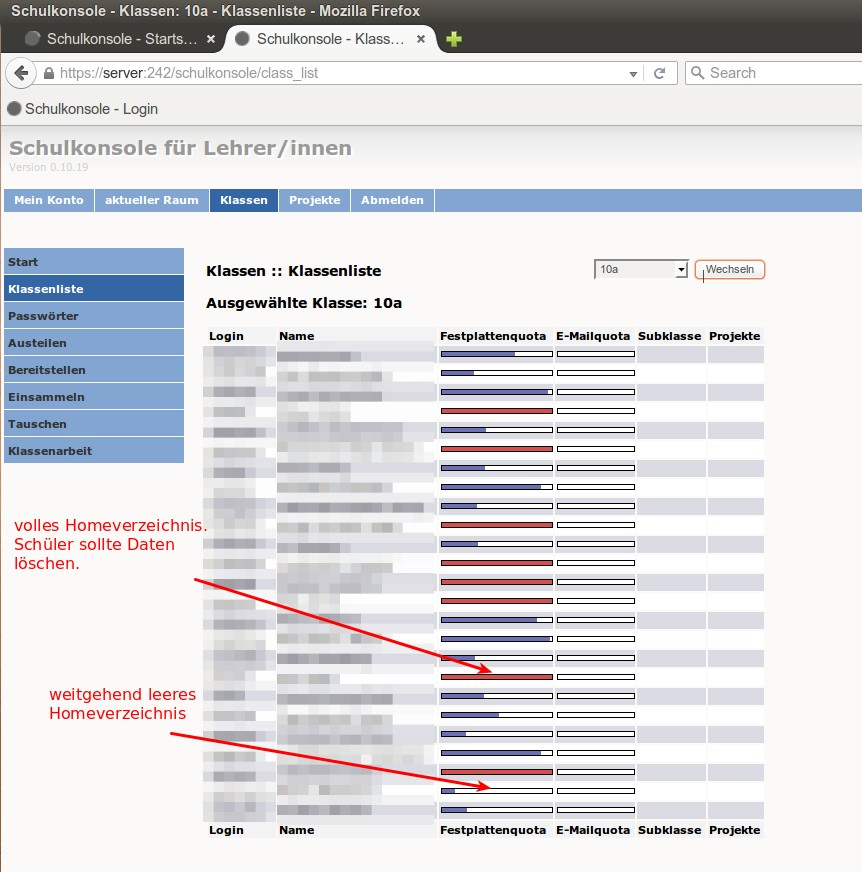
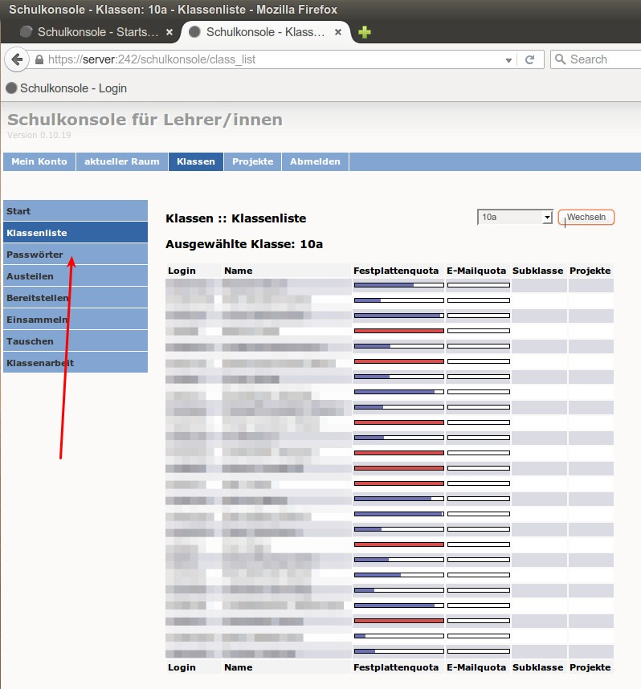
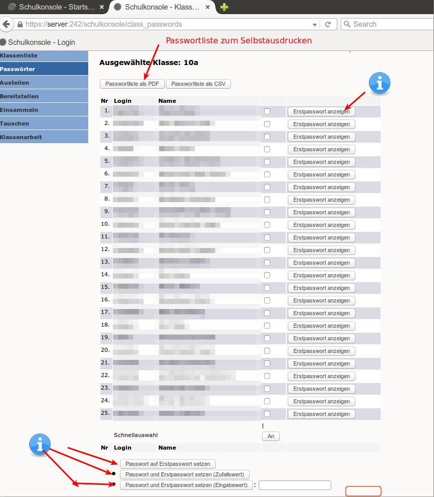
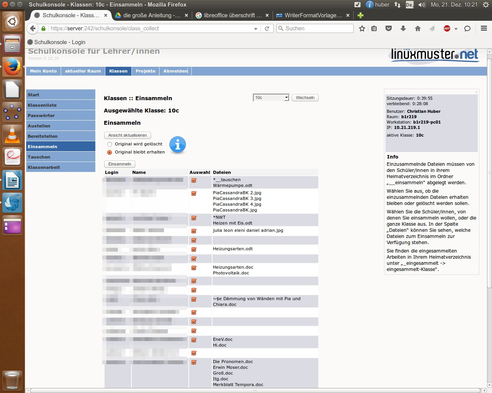
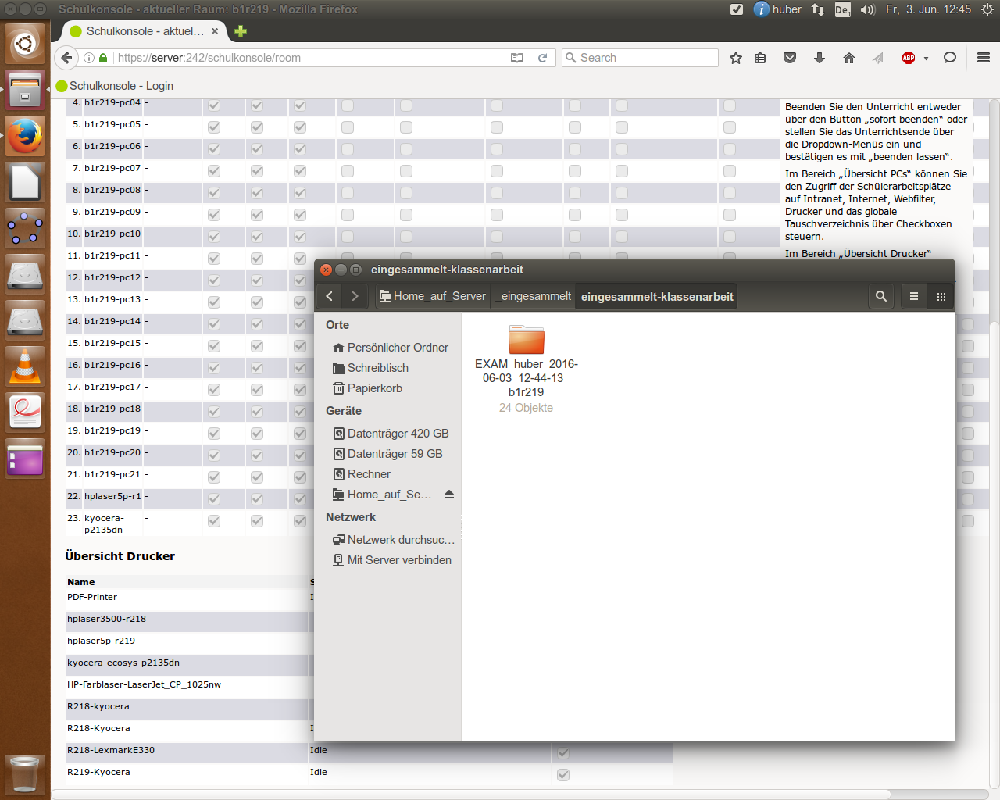
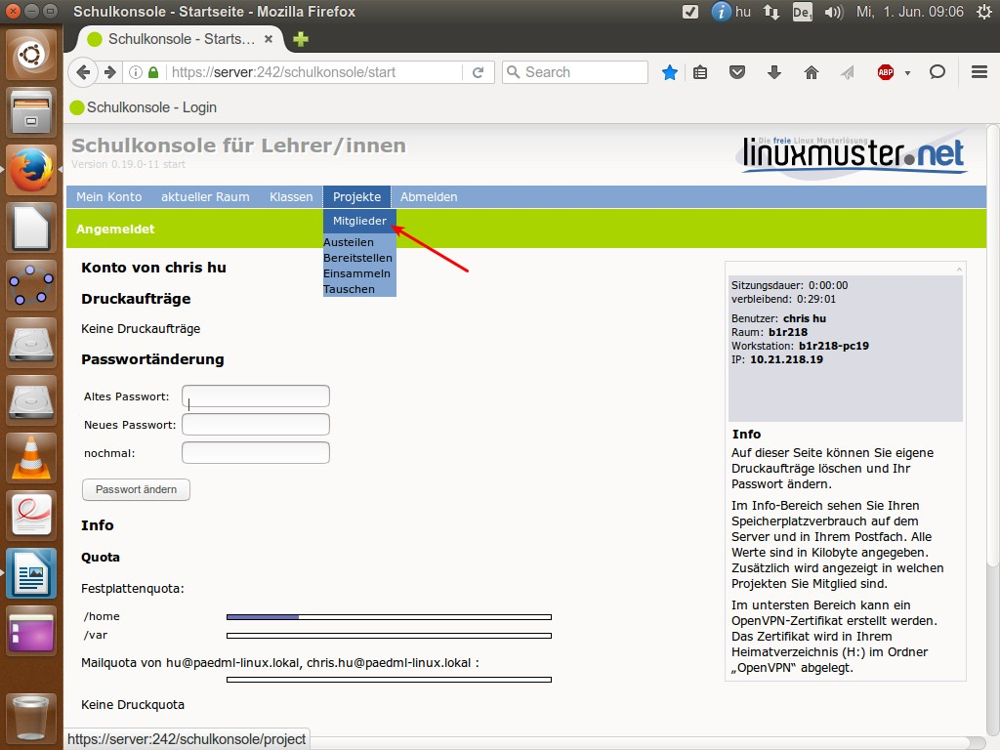

Die Schulkonsole¶
Die Schulkonsole ist dazu gedacht, dem Lehrer die Arbeit mit und in den Computerräumen einer Schule zu erleichtern. Zu diesem Zweck bietet Ihnen die Schulkonsole einfache, praktische Hilfsmittel an. Die Schulkonsole ermöglicht Ihnen, verschiedene administrative Aufgaben durchzuführen. Die wichtigsten sind:
- Eigenes Passwort ändern
- Passwörter der Schüler ändern
- Internet an/ausschalten
- Dateien austeilen/einsammeln
- Festplattenplatz überprüfen [1]
Zugriff auf die Schulkonsole:¶
Zugriff auf die Schulkonsole von den WinXP-Rechnern in R218¶
Auf dem Desktop der Windows-XP Rechner in R218 liegt ein Icon mit dem Namen „Schulkonsole“. Ein Doppelklick darauf öffnet Firefox, der Ihnen die Seite anzeigt, auf der Sie sich mit ihren Zugangsdaten an der Schulkonsole anmelden können.

Zugriff auf die Schulkonsole von den Ubuntu-Rechnern¶
Wenn Sie Ubuntu verwenden (Lehrerzimmer, R219, R218, R210), starten Sie Firefox mit einem einfachen Klick auf das Firefox-Icon auf der linken Seite des Desktops. Sie finden nun direkt unterhalb der Adresszeile im Firefox einen Link mit dem Namen „Schulkonsole“. Ein einfacher Klick auf den Link führt sie zur Anmeldeseite der Schulkonsole, wo Sie sich mit ihren Zugangsdaten anmelden können.
Alternativer Zugriff auf die Schulkonsole¶
Sollte es Ihnen aus irgendeinem Grund nicht gelingen, sich mit einer der beiden Varianten an der Schulkonsole anzumelden, dann können Sie in Firefox (egal ob XP oder Ubuntu) die Adresse der Schulkonsole auch direkt in die Adresszeile des Browsers eingeben. Die Adresse lautet: https://server:242 Auch hier werden Sie zur Anmeldeseite geleitet, wo sie sich mit ihren Zugangsdaten an der Schulkonsole anmelden können.

Anmeldeseite der Schulkonsole¶
Egal welche der oben beschriebenen Varianten Sie gewählt haben: zuerst kommen die Ihnen bekannten Sicherheitshinweise und daraufhin öffnet sich im Browser die Startseite der Schulkonsole. Diese Warnhinweise deuten nicht auf ein Sicherheitsrisiko hin (bei Ihnen zuhause allerdings schon), da der Browser selbstsignierte Zertifikate nicht ohne Weiteres akzeptiert.

Von wo aus man keinen Zugriff auf die Schulkonsole hat¶
Aus Sicherheitsgründen ist der Zugriff auf die Schulkonsole im WLAN gesperrt. Ein Zugriff auf die Schulkonsole von ihrem privaten Rechner, der sich im WLAN-Netz der Schule befindet, ist demnach nicht möglich. Ebenso ist der Zugriff auf die Schulkonsole von ihrem Rechner zuhause nicht möglich.
Arbeiten mit der Schulkonsole¶
Die Startseite¶
Hat man sich erfolgreich an der Schulkonsole angemeldet, wird man auf die Startseite weiter geleitet. Hier bekommen sie einen Überblick über den von Ihnen belegten Festplattenplatz (Festplattenquota /home). Im oberen Bereich sehen sie verschiedene Schaltflächen (Startseite, aktueller Raum, Klassen, Projekte, Abmelden). Außerdem können Sie hier ihr Passwort ändern.

Das eigene Passwort ändern¶
Geben Sie einfach ihr altes Passwort in das Feld nach dem Eintrag „Altes Passwort“ ein. Geben Sie dann ihre neues Passwort in das Feld nach dem Eintrag „Neues Passwort“ ein. Anschließend geben Sie ihr neues Passwort in das Feld nach dem Eintrag „nochmal“ erneut ein. Klicken Sie jetzt auf die Schaltfläche „Passwort ändern“ Dieses geänderte Passwort ersetzt nun das bisherige überall dort, wo Sie früher das alte Passwort verwendet haben:
- Anmeldung an den Rechnern in folgenden Räumen:
- Lehrerzimmer
- Computerraum 219
- Computerraum 218
- Sky-Lounge ( R210)
- Anmeldung am Raumbuchungssystem
- Anmeldung am Schulportfolio
- Anmeldung Schulkonsole
- Anmeldung Vertretungsplan
- WLAN
- CopCloud
Nach Möglichkeit ein sicheres Passwort vergeben¶
Wichtig
Wenn Sie ihr Passwort ändern, was man aus Sicherheitsgründen alle paar Monaten spätestens tun sollte, achten Sie bitte darauf, dass Sie ein möglichst sicheres Passwort anlegen. Ein sicheres Passwort zeichnet sich dadurch aus, dass es Groß- und Kleinbuchstaben, Zahlen und Sonderzeichen ( zum Beispiel ! , $ % & ?) verwendet.
Die Seite „aktueller Raum“¶
Wenn Sie für Ihren Unterricht in einem der beiden Computerräume bestimmte Einstellungen vornehmen möchten (Internet sperren, Drucker sperren, Webfilter ausschalten), klicken Sie auf der Startseite auf die Schaltfläche „aktueller Raum“.

Einstellung für den Unterricht in den Computerräumen vornehmen¶
Sie gelangen nun auf die Seite „aktueller Raum“, wo sie die oben genannten Einstellungen vornehmen können. Bevor Sie eine dieser Funktionen verwenden können, müssen Sie in den entsprechenden Raum wechseln und den Unterricht beginnen. [2] Ganz wichtig ist, dass Sie den Unterricht auch wieder beenden. Am besten geben Sie gleich eine Uhrzeit ein, zu der der Unterricht beendet werden soll. [3] Selbstverständlich können Sie den Unterricht auch beenden, indem Sie auf die entsprechende Schaltfläche klicken. Erst wenn Sie den Unterricht begonnen haben können Sie die ausgegrauten Kästchen manipulieren. [4]

Haben Sie den Unterricht begonnen, stehen ihnen weitere Funktionen zur Verfügung. So können Sie nun zum Beispiel den Internetzugang für alle PCs in der Liste oder nur für einzelne sperren, die Drucker sperren oder den Webfilter ab- und wieder anschalten. Bitte beachten Sie, dass die Änderungen erst wirksam werden, nachdem Sie auf die Schaltfläche „Änderung übernehmen“ geklickt haben:

Die Seite „Klassen“¶
Klicken Sie auf der Startseite auf die Schaltfläche „Klassen“, gelangen Sie zu der entsprechenden Seite, auf der Sie Passwörter der Schüler neu vergeben oder zurücksetzen können.

Dazu wählen Sie rechts oben in dem Drop-down-Menu die gewünschte Klasse aus und klicken anschließend auf „Wechseln“.

Klicken Sie nun auf die gewünschte Klasse!

Übersicht über den Speicherplatz der Schüler¶
Sie sehen nun die Klassenliste der ausgewählten Klasse. Gleichzeitig findet sich neben den Namen der Schüler eine Anzeige über den von den Schülern belegten Festplattenplatz auf dem Server. Ein leerer Balken bedeutet ein weitgehend leeres Homeverzeichnis des Schülers auf dem Server, wo der Schüler seine Daten speichern kann. Ein roter Balken bedeutet entsprechend, dass das Verzeichnis des Schülers voll ist. Der Schüler sollte dann Daten aus seinem Verzeichnis löschen oder per USB-Stick sichern, wenn er weiterhin Daten in der Schule speichern möchte.
Vergessene/ verlorene Schülerpasswörter anzeigen oder neue Schülerpasswörter vergeben¶
Wenn mal wieder ein Schüler sein Passwort vergessen/verlegt oder einfach nur nicht richtig eingegeben hat, können Sie ihm leicht aus der Patsche helfen. Dazu klicken Sie auf die Schaltfläche „Passwörter“ am linken Rand der Seite „Klassen“.
Sie sehen nun erneut eine Klassenliste, die aber nun neben dem Namen des Schülers auch seinen Login-Namen anführt.
Klicken Sie auf die Schaltfläche „Erstpasswort anzeigen“ neben dem Namen eines Schüler, so erscheint das Passwort, welches für den Schüler bei der allerersten Anmeldung vom System automatisch vergeben wurde. Da die Schüler ihr Passwort nicht oft oder auch gar nicht ändern, hat man auf diese Weise sehr oft das vergessene Passwort wieder zur Hand. Hat der Schüler sein Passwort geändert, aber nun vergessen, haben sie mehrere Möglichkeiten:
- Markieren Sie in der Klassenliste einen Schüler, indem Sie in das Kästchen links neben der Schaltfläche „Erstpasswort anzeigen“ klicken.
- Klicken Sie im unteren Bereich der Seite auf die Schaltfläche „Zurücksetzen auf Erstpasswort“, um das Erstpasswort wieder zu aktivieren.
- Klicken Sie auf „Zufallspasswort setzen“, um dem Schüler ein neues zufällig generiertes Passwort zu erzeugen.
- Oder Sie geben ein neues Passwort in das Eingabefeld neben der Schaltfläche „Passwort setzen“ ein und klicken anschließend auf diese.
Dateien austeilen/ einsammeln¶
Selbstverständlich haben Sie die Möglichkeit, den Schüler bei der Arbeit in den Computerräumen Dateien zu Verfügung zu stellen. Das funktioniert mit einigen kleinen Unterschieden genauso wie bisher auch. Der größte Unterschied ist, dass sich die Ordner „__austeilen, __auszuteilen, __einsammeln“ etc. in Ihrem Homeverzeichnis befinden (Home_auf_Server). Wenn sie einer Klasse ein bestimmte Datei austeilen möchten, gehen Sie folgendermaßen vor:
- Kopieren Sie die gewünschte Datei in den Ordner: „Home_auf_Server“ // „__auszuteilen“ //„__auszuteilen-NAME DER KLASSE“
- Melden sie sich der Schulkonsole an (siehe Zugriff auf die Schulkonsole: )
- Wechseln Sie in den Bereich „Klassen“
- Tragen Sie sich eine Klassen ein oder wechseln sie zu der Klasse, indem auf den Button der Klasse klicken, wenn Sie bereits in der entsprechenden Klasse eingetragen sind.
- Klicken Sie nun am linken Rand auf die blaue Schaltfläche „Austeilen“
- Wenn Sie auf die Schaltfläche „Ansicht aktualisieren“ klicken, werden Ihnen alle Dateien angezeigt, die sich in dem Ordner „__auszuteilen-NAME DER KLASSE“ in „__auszuteilen“ in ihrem Homeverzeichnis befinden.
- Scrollen Sie nach unten und klicken Sie auf „Austeilen“
- Die auszuteilende Datei wird nun in das in das Heimatverzeichnis der Schüler/innen in den Ordner „__austeilen -> austeilen-Klasse“ kopiert.
Einsammeln¶
Möchten Sie Dateien der Schüler wieder einsammeln gehen Sie folgendermaßen vor: Einzusammelnde Dateien müssen von den Schüler/innen in ihrem Heimatverzeichnis im Ordner „__einsammeln“ abgelegt werden. Wählen Sie aus, ob die einzusammelnden Dateien erhalten bleiben oder gelöscht werden sollen. Wählen Sie die Schüler/innen, von denen Sie einsammeln wollen, oder die ganze Klasse aus. In der Spalte „Dateien“ können Sie sehen, welche Dateien zum Einsammeln zur Verfügung stehen. Sie finden die eingesammelten Arbeiten in Ihrem Heimatverzeichnis unter „_eingesammelt -> eingesammelt-Klasse“.
Bereitstellen¶
Möchten Sie den Schülern bestimmte Dateien als Vorlagen zu Verfügung stellen, so gehen Sie folgendermaßen vor:
- Ihre Vorlagen müssen in Ihrem Heimatverzeichnis unter „_bereitstellen -> bereitstellen-Klasse“ abgelegt sein.

- Nach dem Betätigen der Schaltfläche „Bereitstellen“ finden die Schüler/innen Ihre Vorlagen in ihrem Heimatverzeichnis unter „__vorlagen -> vorlagen-Klasse“.

Einsammeln Auch das Einsammeln von Dateien ist möglich:
- Einzusammelnde Dateien müssen im Heimatverzeichnis der Schüler/innen im Ordner „__einsammeln“ abgelegt sein, damit sie in der Ansicht der Seite „Einsammeln“ auf der Schulkonsole aufgelistet werden. Nachträglich von den Schüler/innen dorthin abgelegte Dateien können Sie über „Ansicht aktualisieren“ sichtbar machen.
- Wählen Sie aus, ob die Originaldateien auf Schülerseite gelöscht werden oder erhalten bleiben sollen.
- Sie finden die eingesammelten Dateien in Ihrem Heimatverzeichnis unter „_eingesammelt -> eingesammelt-aktueller_raum“.

Tauschen¶
Tauschen von Dateien funktioniert nach dem gleichen Muster:
- Melden sie sich der Schulkonsole an (siehe Zugriff auf die Schulkonsole: )
- Wechseln Sie in den Bereich „Klassen“

- Tragen Sie sich eine Klassen ein oder wechseln sie zu der Klasse, indem auf den Button der Klasse klicken, wenn Sie bereits in der entsprechenden Klasse eingetragen sind.

- Klicken Sie im Bereich “Klassen” auf “Unterricht”.

- Wenn Sie sich noch nicht in einen Raum eingetragen haben, werden Sie nun dazu aufgefordert. Wählen Sie einen Raum und klicken Sie “Wechseln”.

- Sie sehen nun den gebuchtem Raum und alle bereits angemeldeten Schüler. Um Dateien zu tauschen, müssen Sie den Unterricht beginnen. Geben Sie vorher eine Uhrzeit an, an dem der Unterricht in diesem Raum wieder enden soll und klicken Sie anschließen auf “beenden lassen”, oder denken Sie daran, am Ende der Stunde den Unterricht in der Schulkonsole von Hand wieder zu beenden.

- Im folgenden werden nun die Tauschverzeichnisse in den Homeverzeichnisse der Schüler eingebunden. Es erscheint außerdem ein Hinweis in Form eines grünen Balkens im Browser, dass man sich unter Windows erneut anmelden muss, um auf die Tauschverzeichnisse zugreifen zu können.

- Nach ein paar Augenblicken (Ubuntu) oder dem erneuten Ab- und Anmelden am System (Windows) finden Sie in ihrem Homeverzeichnis die Tauschordner. Einer davon ist nach der Klasse benannt, mit der Sie sich gerade im gebuchten Computerraum befinden. Die Schüler finden in ihren Homeverzeichnissen (Home_auf_Server) den Tauschordner ebenfalls. Bitte denken Sie daran, dass die Tauschordner nicht zum dauerhaften Speichern von Dateien gedacht sind. Nehmen Sie dazu lieber ihr Homeverzeichnis oder nutzen Sie die Funktion austeilen/einsammeln.
Klassenarbeitsmodus¶
Ehrlich gesagt habe ich den Klassenarbeitsmodus selbst noch nie benutzt, und ich habe auch noch von keinem gehört, der ihn bei uns am Copernicus-Gymnasium in den vergangenen 6 Jahren, seit wir dieses System einsetzen, verwendet hätte. Offenbar besteht kein besonderer Bedarf an diesem Feature. Das ist schade, denn eine Klassenarbeit oder einen Test in den Computerräumen zu schreiben und dafür einen gesicherte Umgebung zu schaffen (kein Internetzugang, kein Zugriff für die Schüler auf ihr Homeverzeichnis), ist mit der Schulkonsole kein Problem. Wenn Sie es ausprobieren wollen, gehen Sie folgendermaßen vor: Gehen Sie auf der Schulkonsole in „aktueller Raum“, wählen Sie dort den Raum aus, in dem Sie die Arbeit zu schreiben beabsichtigen, klicken auf „wechseln“, wenn Sie den Raum ggfs. ändern müssen und klicken dann auf “Unterricht beginnen”:

Jetzt erst ist der Klassenarbeitsmodus freigeschaltet. Sie werden auf eine Seite weitergeleitet, auf der Sie den aktuellen Raum sehen sowie die Mitteilung, dass der Klassenarbeitsmodus nicht aktiv ist. Außerdem wird Ihnen ein Workstationpasswort angezeigt. Dieses benutzen die Schüler, um sich für die Klassenarbeit an den Pcs anzumelden. Als Login dient der Name des PCs, den die Schüler am oberen Bildschirmrand ablesen können. Wenn Sie selbst ein Passwort erstellen möchten, ersetzen Sie das automatisch erzeugte und klicken anschließend auf „Klassenarbeit“ starten.

Wichtig
Beachten Sie hier wie auch in allen anderen Bereich der Schulkonsole die Informationen am rechten Rand des Bildschirms! Viele nützliche Hinweise finden sich dort!!
Auf der nächsten Seite sehen Sie jetzt die Mitteilung, dass der Klassenarbeitsmodus aktiviert ist. Sie können verfolgen, welche Schüler bereits angemeldet sind. Wenn Sie zuvor Dateien in ihrem Homeverzeichnis im Ordner „_bereitstellen“ kopiert haben, werden diese in der Übersicht angezeigt. Sie können aber auch von hier aus noch Dateien in das genannte Verzeichnis hochladen, indem Sie auf „Browse“ klicken, die gewünschte Datei auswählen, und den Vorgang mit einem Klick auf „Submit Query“ abschließen. Die neu hochgeladene Datei wird Ihnen dann in der Liste angezeigt. Sollte das nicht der Fall sein, aktualisieren Sie die Seite, indem Sie F5 drücken.

Die Schüler finden nun in ihrem Homeverzeichnis (Home_auf_Server) im Ordner Vorlagen_auf_Server einen Ordner mit dem Namen der Lehrkraft, die die Arbeit durchführt. Darin befinden sich alle Dateien, die Sie den Schülern für die Arbeit zur Verfügung stellen. Die Schüler könne diese nun nach Herzenslust oder gemäß Ihrer Vorgaben bearbeiten, ohne dabei auf das Internet oder ihr eigenes Homeverzeichnis zugreifen zu können. Schummeln ist also nicht möglich.Die Infobox am rechten Bildrand der Schulkonsole beschreibt das Vorgehen zum Einsammeln der von den Schülern bearbeiteten Dateien: „Die Schüler/innen müssen ihre Ergebnisse im Heimatverzeichnis der Arbeitsstation im Ordner „__einsammeln“ ablegen, damit sie hier aufgelistet werden und eingesammelt werden können. Laden Sie die Seite eventuell neu, um den aktuellen Status zu sehen. „Kopien einsammeln“ sammelt den aktuellen Stand der Ergebnisse ein. „Einsammeln und beenden“ sammelt alle Ergebnisse ein, löscht den Inhalt des Ordners „__einsammeln“ der Arbeitsstation und beendet die Klassenarbeit. [5]

Haben Sie den Klassenarbeitsmodus mit „Einsammeln und beenden“ abgeschlossen, finden Sie die Ergebnisse der Schüler in Ihrem Homeverzeichnis (Home_auf_Server) im Ordner „_eingesammelt“ im Ordner „eingesammelt-klassenarbeit“.
Kurse/ Projekte anlegen¶
Die Klassen sind im System bereits angelegt, weshalb das Austeilen von Dateien etc. relativ problemlos möglich ist. Die Kurstufen allerdings sind nicht weiter in Kurse differenziert. Wenn Sie mit ihrem Kurs Dateien austauschen wollen etc., müssen deshalb in der Schulkonsole einen neues Projekt anlegen und diesem dann die einzelnen SchülerInnen dem Projekt von Hand zuweisen, Zeitaufwand ca. 5 Minuten: Melden Sie sich mit Ihrem Benutzernamen an der Schulkonsole an ( Siehe Zugriff auf die Schulkonsole: ). Klicken Sie auf den Menupunkt „Projekte“. Sie landen auf der Seite „Projekte“.
Dort können Sie sich in ein bereits bestehendes Projekt eintragen oder ein neues erstellen. Wie üblich auf der Schulkonsole werden Ihnen am rechen Rand nützliche Informationen eingeblendet ( z.B. die Kriterien der Benennung von neuen Projekten).

Setzen Sie einen Haken bei „offenes Projekt“, wenn Sie möchten, dass sich andere Lehrer selbstständig in dieses Projekt eintragen können. Im anderen Fall setzen Sie den Haken nicht. Wenn Sie ein neues Projekt erstellt haben oder sich in ein anderes eingetragen haben, wählen Sie es rechts oben aus und klicken „Wechseln“. Im Bereich „Mitglieder“ hinzufügen können Sie nach einzelnen Schülern, Lehrern, ganzen Klassen oder anderen Projekten suchen, die Sie ihrem Projekt zuordnen möchten Im Bereich „Mitglieder im Projekt“ werden alle Mitglieder des Projekts aufgeführt. Wenn Sie die Leitung des Projekts haben oder es erstellt haben, können Sie hier die Mitgliedschaft im Projekt für einzelne Mitglieder auch wieder beenden.

Wenn Sie den Vorgang abgeschlossen haben, können Sie mit den Mitgliedern des Projekts Dateien tauschen etc. Das funktioniert wie bei „normalen“ Klassen auch. Siehe dazu die Kapitel Dateien austeilen/ einsammeln , Einsammeln und Bereitstellen . Die entsprechenden Funktionen werden Ihnen im Menupunkt „Projekte“ bei Berührung mit der Maus angezeigt.
Footnotes
| [1] | https://servus.bg.hd.bw.schule.de/linuxmuster-default/anleitungen/Anleitung_Schulkonsole_PaedML.pdf |
| [2] | Ebd. |
| [3] | Ebd. |
| [4] | Ebd. |
| [5] | Danke an linuxmuster.net für die hilfreichen Anmerkungen in der Schulkonsole, deren Beachtung den Umgang mit der Schulkonsole sehr vereinfacht. |